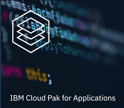

Demo Days: Cloud Pak for Applications

Webcasts:
Click here for Event Registrations
| date / Time | Session |
|---|---|
| Thursday, May 07, 2020, 10:00 AM EDT | Webcast Replay - Cloud Pak for Applications Overview |
| Thursday, May 21, 2020, 10:00 AM EDT | Modernize WebSphere apps using Transformation Advisor and IBM Cloud Pak for Applications |
| Thursday, June 04, 2020, 10:00 AM ED | Cloud Native Solution Development with the IBM Cloud Pak for Apps |
| Thursday, June 18, 2020, 10:00 AM EDT | Improve flow and accelerate releases: how IBM DevOps complements Cloud Paks |
Office Hours (Eastern Daylight Time)
| Date | Morning | Afternoon | Evening |
|---|---|---|---|
| Thursday, May 14, 2020 | 8am EDT | 12pm EDT | 9pm EDT |
| Thursday, May 28, 2020 | 8am EDT | 12pm EDT | 9pm EDT |
| Thursday, June 11, 2020 | 8am EDT | 12pm EDT | 9pm EDT |
| Thursday, June 25, 2020 | 8am EDT | 12pm EDT | 9pm EDT |